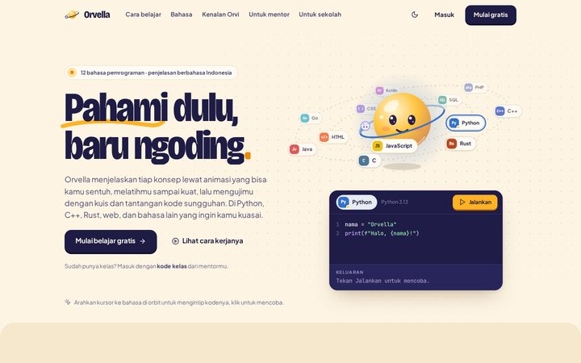
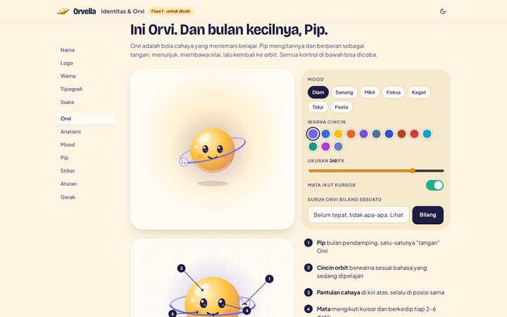
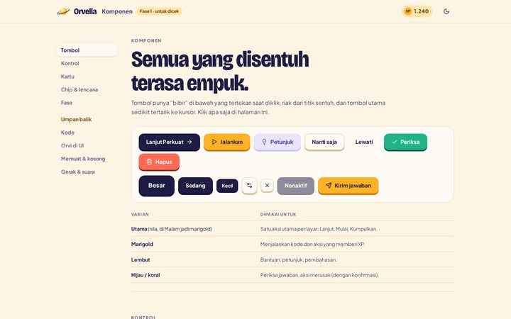

<title>Orvella Mockup</title>
<meta name="description" content="Mockup desain Orvella (dulu GNOSIA), fase 1: identitas, maskot Orvi, komponen, dan landing page.">
<link rel="stylesheet" href="fonts/fonts.css">
<link rel="preconnect" href="https://fonts.gstatic.com" crossorigin>
<link rel="stylesheet" href="https://fonts.googleapis.com/css2?family=Bricolage+Grotesque:opsz,wdth,wght@12..96,75..100,200..800&family=Plus+Jakarta+Sans:ital,wght@0,200..800;1,200..800&family=JetBrains+Mono:wght@400..800&display=swap">
<link rel="stylesheet" href="css/tokens.css">
<link rel="stylesheet" href="css/base.css">
<link rel="stylesheet" href="css/components.css">
<script>(function(){var q=new URLSearchParams(location.search),h=document.documentElement,g=function(k){try{return localStorage.getItem(k)}catch(e){return null}};var t=q.get('theme')||g('orv-theme');if(t==='light'||t==='dark')h.dataset.theme=t;var m=q.get('motion')||g('orv-motion');if(m==='full'||m==='calm'||m==='off')h.dataset.motion=m;})();</script>
<style>
  .hub-top { display: flex; align-items: center; gap: 14px; min-height: 68px; border-bottom: 1px solid var(--line); }
  .hub-top .btn-icon { margin-left: auto; }
  .hub-hero { display: grid; grid-template-columns: auto minmax(0, 1fr); gap: clamp(20px, 4vw, 48px); align-items: center; padding-block: clamp(36px, 6vw, 72px) 28px; }
  .hub-orvi { width: clamp(150px, 20vw, 230px); display: grid; place-items: center; }
  .hub-hero h1 { font-size: clamp(2.4rem, 1.4rem + 3.6vw, 4.4rem); font-weight: 800; letter-spacing: -.04em; font-variation-settings: "wdth" 82; line-height: .95; }
  .hub-hero h1 span { color: var(--marigold-deep); }
  .hub-hero .lead { margin-top: 14px; }
  .hub-phase { display: inline-flex; align-items: center; gap: 8px; margin-bottom: 14px; }
  .pages { display: grid; grid-template-columns: repeat(3, minmax(0, 1fr)); gap: 16px; }
  .pg { display: grid; text-decoration: none; color: var(--ink); border-radius: var(--r-lg); background: var(--surface); box-shadow: var(--shadow-clay); overflow: hidden; transition: transform var(--dur-3) var(--ease-spring); }
  .pg:hover { transform: translateY(-4px); }
  .pg img { width: 100%; aspect-ratio: 16 / 10; object-fit: cover; object-position: top; border-bottom: 1px solid var(--line); background: var(--bg-2); }
  .pg-body { display: grid; gap: 6px; padding: 16px 18px 18px; }
  .pg-body b { font-family: var(--font-display); font-size: 1.3rem; letter-spacing: -.02em; display: flex; align-items: center; gap: 8px; }
  .pg-body b svg { width: 18px; height: 18px; color: var(--ink-3); transition: translate var(--dur-2); }
  .pg:hover .pg-body b svg { translate: 4px 0; }
  .pg-body p { font-size: .88rem; color: var(--ink-2); }
  @media (max-width: 900px) { .pages { grid-template-columns: 1fr; max-width: 520px; } .hub-hero { grid-template-columns: 1fr; justify-items: start; } }
  .hub-2 { display: grid; grid-template-columns: minmax(0, 1fr) minmax(0, 1fr); gap: 16px; margin-top: 40px; }
  @media (max-width: 860px) { .hub-2 { grid-template-columns: 1fr; } }
  .box { padding: 22px; border-radius: var(--r-lg); background: var(--bg-2); }
  .box h2 { font-size: 1.4rem; margin-bottom: 14px; }
  .dec { display: grid; gap: 10px; margin: 0; padding: 0; list-style: none; }
  .dec li { display: grid; grid-template-columns: 120px minmax(0, 1fr); gap: 12px; font-size: .92rem; }
  .dec li b { color: var(--ink-3); font-size: .74rem; letter-spacing: .1em; text-transform: uppercase; padding-top: 3px; }
  @media (max-width: 480px) { .dec li { grid-template-columns: 1fr; gap: 2px; } }
  .ask { display: grid; gap: 10px; margin: 0; padding: 0; list-style: none; counter-reset: q; }
  .ask li { counter-increment: q; position: relative; padding-left: 38px; font-size: .95rem; line-height: 1.45; }
  .ask li::before { content: counter(q); position: absolute; left: 0; top: -1px; width: 26px; height: 26px; border-radius: 50%; display: grid; place-items: center; background: var(--marigold); color: #1E1C45; font-weight: 800; font-size: .8rem; }
  .road { margin-top: 40px; }
  .road h2 { font-size: 1.6rem; margin-bottom: 16px; }
  .road-list { display: grid; grid-template-columns: repeat(4, minmax(0, 1fr)); gap: 10px; margin: 0; padding: 0; list-style: none; }
  .road-list li { display: grid; gap: 8px; align-content: start; padding: 18px; border-radius: var(--r-lg); background: var(--surface); border: 1.5px solid var(--line); }
  .road-list li.is-now { border-color: var(--marigold); box-shadow: var(--glow-marigold); }
  .road-list .rn { font: 800 .74rem var(--font-ui); letter-spacing: .12em; text-transform: uppercase; color: var(--ink-3); }
  .road-list b { font-family: var(--font-display); font-size: 1.2rem; letter-spacing: -.02em; line-height: 1.15; }
  .road-list p { font-size: .84rem; color: var(--ink-2); }
  @media (max-width: 960px) { .road-list { grid-template-columns: repeat(2, minmax(0, 1fr)); } }
  @media (max-width: 520px) { .road-list { grid-template-columns: 1fr; } }
  .hub-foot { margin-block: 48px 90px; font-size: .86rem; color: var(--ink-3); display: flex; gap: 8px; align-items: center; }
  .hub-foot svg { width: 16px; height: 16px; }
</style>

<header class="wrap hub-top">
  <span class="logo"><span class="logo-mark" data-logo></span><span class="logo-word">Orvella</span></span>
  <span class="small faint">Mockup desain</span>
  <button class="btn btn-ghost btn-icon" id="themeBtn" type="button" aria-label="Ganti tema"><i data-lucide="moon"></i></button>
</header>

<main class="wrap">
  <section class="hub-hero">
    <div class="hub-orvi" id="hubOrvi"></div>
    <div>
      <span class="hub-phase"><span class="badge badge-warn">Fase 1 dari 4</span><span class="small faint">siap dicek</span></span>
      <h1>GNOSIA sekarang <span>Orvella</span>.<br>Ini identitas dan maskot barunya.</h1>
      <p class="lead">Namanya baru, tampilannya didesain ulang total, dan maskotnya diganti Orvi. Konsep 4 fase tetap. Fase ini menetapkan rasa dan wajahnya dulu, sebelum semua layar dibuat.</p>
    </div>
  </section>

  <section class="pages" aria-label="Halaman fase 1">
    <a class="pg" href="landing.html"><span class="pg-body"><b>Landing page <i data-lucide="arrow-right"></i></b><p>Etalase “hidup”: orbit 12 bahasa, memori yang bergerak di Python, C++, dan Rust, editor yang benar-benar mengompilasi, dan teaser Studio Mentor.</p></span></a>
    <a class="pg" href="brand.html"><span class="pg-body"><b>Identitas &amp; Orvi <i data-lucide="arrow-right"></i></b><p>Nama, logo, warna, huruf, gaya bahasa, dan lembar maskot: 7 mood, perilaku Pip, anatomi, stiker, aturan pakai.</p></span></a>
    <a class="pg" href="styleguide.html"><span class="pg-body"><b>Komponen <i data-lucide="arrow-right"></i></b><p>Tombol empuk, kontrol, kartu jalur, cincin fase, koreografi benar/salah, kartu kode, dan tiga intensitas gerak.</p></span></a>
  </section>

  <div class="hub-2">
    <section class="box">
      <h2>Yang sudah diputuskan</h2>
      <ul class="dec">
        <li><b>Nama</b><span>Orvella, dari kata orbit. Cincin logo = cincin 4 fase.</span></li>
        <li><b>Maskot</b><span>Orvi, bola cahaya marigold, dengan bulan kecil Pip sebagai “tangan”.</span></li>
        <li><b>Gaya</b><span>Ceria hangat (krem, marigold, nila) dan mode Malam yang bercahaya.</span></li>
        <li><b>Belajar</b><span>Tetap 4 fase per bab: Pahami, Perkuat, Kuis, Uji.</span></li>
        <li><b>Bahasa</b><span>12 bahasa: Python, JavaScript, HTML, CSS, C, C++, Rust, Java, Go, SQL, Kotlin, PHP.</span></li>
        <li><b>Mentor</b><span>Bisa menyusun materi sendiri lewat Studio berbasis blok (Fase 3).</span></li>
      </ul>
    </section>
    <section class="box">
      <h2>Tolong cek ini dulu</h2>
      <ol class="ask">
        <li>Orvi dan Pip sudah terasa pas sebagai maskot? Coba colek, seret, dan ganti mood-nya.</li>
        <li>Warna dan huruf sudah “soft tapi bagus”? Cek juga mode Malam.</li>
        <li>Landing sudah terasa hidup, atau masih kurang gerak di bagian tertentu?</li>
        <li>Ada bahasa yang mau ditambah atau dibuang dari daftar 12?</li>
      </ol>
    </section>
  </div>

  <section class="road" aria-labelledby="road-t">
    <h2 id="road-t">Rencana fase</h2>
    <ol class="road-list">
      <li class="is-now"><span class="rn">Fase 1 · sekarang</span><b>Identitas, Orvi, landing</b><p>Merek, maskot, komponen dasar, dan landing page.</p></li>
      <li><span class="rn">Fase 2</span><b>Layar siswa</b><p>Onboarding, beranda, katalog & peta jalur, pemutar 4 fase multi-bahasa, playground, progres.</p></li>
      <li><span class="rn">Fase 3</span><b>Studio mentor & admin</b><p>Editor materi berbasis blok, bank soal, kelas & tugas, review kode, runtime bahasa.</p></li>
      <li><span class="rn">Fase 4</span><b>Rencana rebuild</b><p>Urutan membangun ulang kode GNOSIA jadi Orvella, termasuk runner multi-bahasa.</p></li>
    </ol>
  </section>

  <p class="hub-foot"><i data-lucide="sliders-horizontal"></i> Dok “Mockup” di kiri bawah: pindah halaman, ganti tema, atur gerak, dan nyalakan suara. Dok itu khusus mockup.</p>
</main>

<script src="https://cdn.jsdelivr.net/npm/gsap@3.15.0/dist/gsap.min.js"></script>
<script src="https://cdn.jsdelivr.net/npm/gsap@3.15.0/dist/MorphSVGPlugin.min.js"></script>
<script src="https://cdn.jsdelivr.net/npm/lucide@0.460.0/dist/umd/lucide.min.js"></script>
<script src="https://cdn.jsdelivr.net/npm/canvas-confetti@1.9.3/dist/confetti.browser.min.js"></script>
<script>/* cadangan offline: pakai salinan lokal di vendor/ bila CDN tidak terjangkau */
window.gsap||["gsap", "MorphSVGPlugin"].forEach(function(n){document.write('<script src="vendor/gsap/'+n+'.min.js"><\/script>')});
window.lucide||document.write('<script src="vendor/lucide.min.js"><\/script>');
window.confetti||document.write('<script src="vendor/confetti.browser.min.js"><\/script>');</script>
<script src="js/fx.js"></script>
<script src="js/sound.js"></script>
<script src="js/ui.js"></script>
<script src="js/orvi.js"></script>
<script>
  (function () {
    var o = Orvi.mount(document.getElementById('hubOrvi'), { size: 210, idle: true, idleMs: 40000, side: 'top' });
    setTimeout(function () { o.say('Halo! Aku Orvi. Ini Pip, bulanku.', { ms: 3200 }); }, 900);
    var tb = document.getElementById('themeBtn');
    function sync() { tb.innerHTML = '<i data-lucide="' + (FX.isDark() ? 'sun' : 'moon') + '"></i>'; FX.icons(tb); }
    tb.addEventListener('click', function () { FX.setTheme(FX.isDark() ? 'light' : 'dark'); sync(); });
    sync();
  })();
</script>
<script src="js/mock.js"></script>
